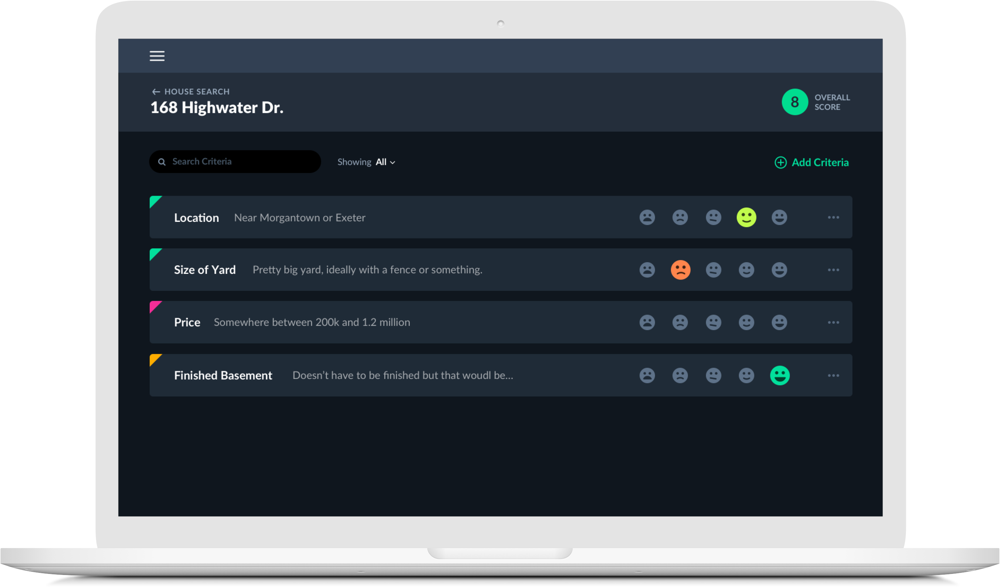
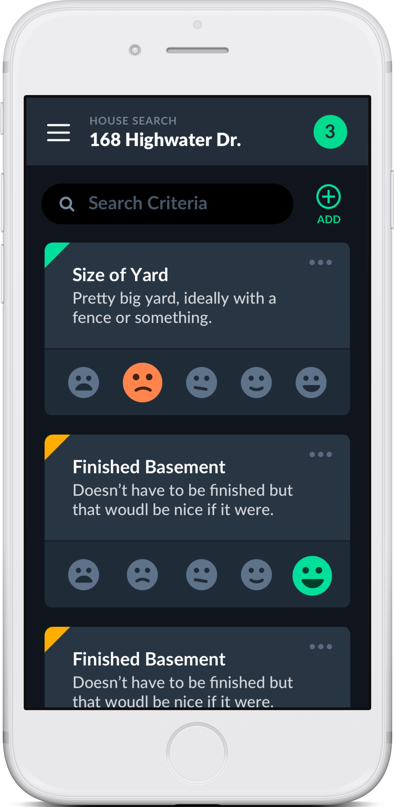
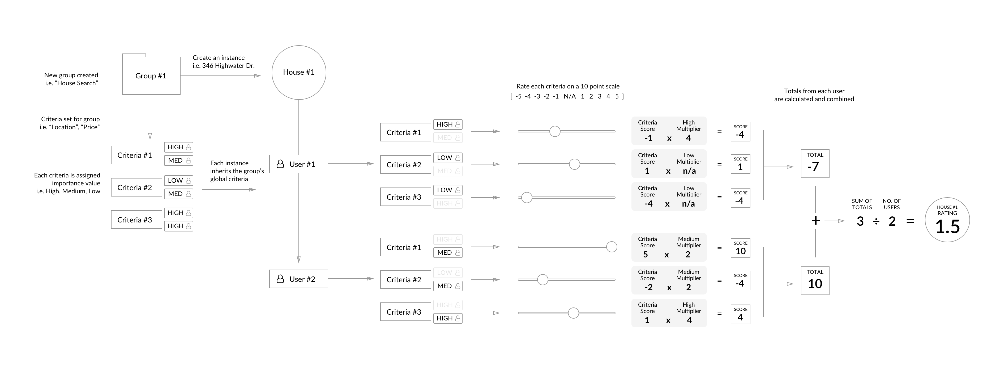

The Project
This project was a collaboration with Tory Martin. The idea came to me while my wife and I were search for houses. For each house we looked at, there was criteria we shared as well as criteria we each had individually. We each put different value in various criteria.

I thought there had to be a better way to logically capture and compare criteria and produce a score to help people measure criteria and make sure they were making the right decisions.
The Idea
I knew that there had to be an easier way for an individual, or a group, to make better decisions by building a simple interface that collects, calculates, and combines each user's opinions and preferences into one, easy to understand metric.

The app has three key parts: the group, the instance, and the criteria. A group is a collection of instances. For each instance, each person involved can individiaully rate criteria on a scale of -4 to +4 (visualized using an easy to understand emoji-scale). The importance, or weight, of each criteria is set by, and specific to, each user and acts as a multiplier.

Let's Go House Hunting
As an example, let's pretend my wife and I are actively searching for a new house. First, we would create a new group called "House Search". Before we visit any actual houses, we will sit down together and agree on a list of criteria (i.e. Big Yard, Basement, Fireplace, etc.). Then, logging in with our personal accounts, we would give each criteria an imporance: Low, Medium, or High. Let's say a big yard is very important to me, so I rate it high, but it is less important to my wife, so she rates it medium.
Now that we have our House Search group set up with criteria, we're ready to start looking at properties. For each new house we visit, we'd create a new instance. Each new instance will already have a list of criteria attached, since we set that up at the group level. After visiting the house, we would log in individually and rate each criteria. In the interace, we don't show the -4 to +4 scale I mentioned above. Instead, we give a simple 5-point visual rating system using emoji-like faces. This helps prevent the user from being distracted by the individual numbers (specifically the connotation that goes along with selecting a negative number) and lets them focus on simply and quickly rating. I might rate the yard someone low (-2), but my wife, who loved the yard, might rate it high (+4). Becuase I maked the yard as "important", my rating would look like -2 x 4 = -8 while my wife's, who gave the yard critieria medium importance, would look like 4 x 0 = 4. The overall score for the yard criteria in this specific instance would be -4.